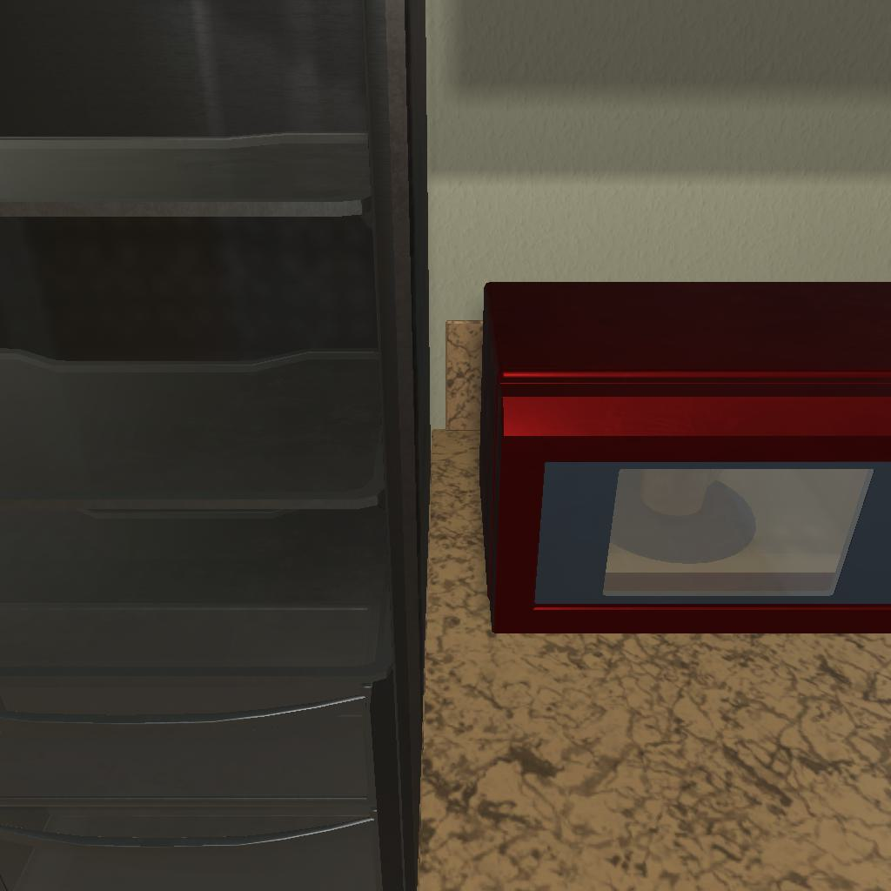
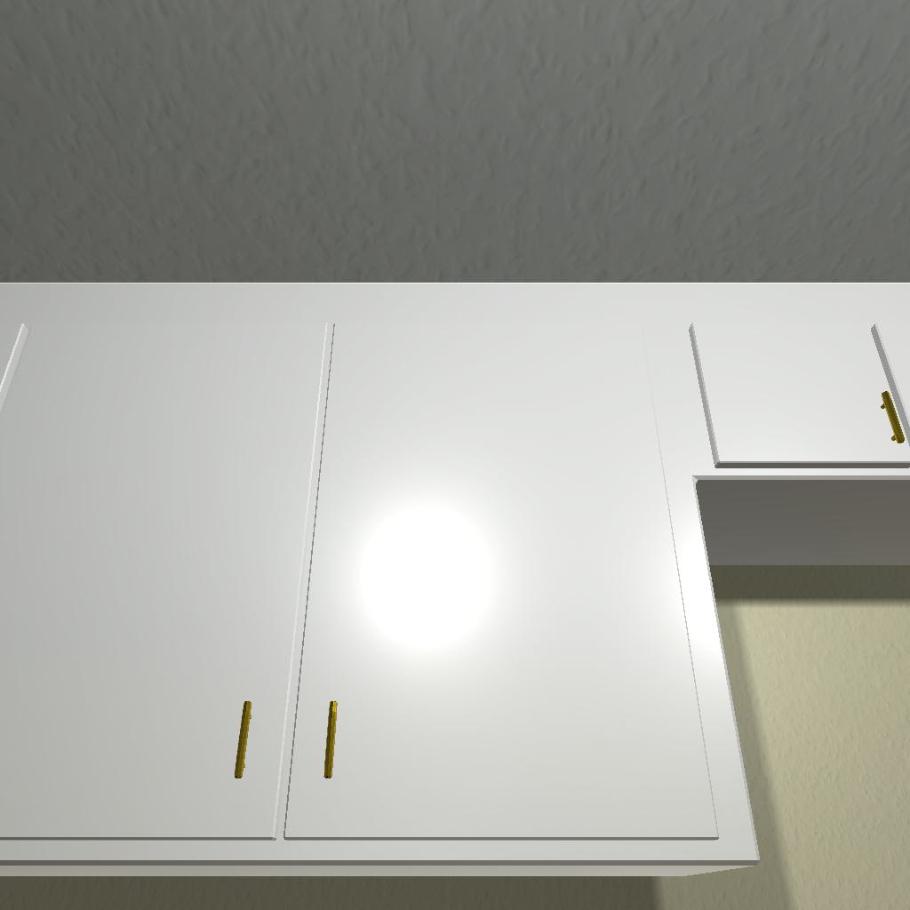

---------------------------------------------------------task: 18---------------------------------------------------------
--------------------------------------------------------------------------------------------------------------------------------------------------------------------
--------------------------------------------------------------------------------------------------------------------------------------------------------------------
Step:--------------------------------------------------------------------------19-------------------------------------------------------------------------------
----------------------------------------
VLM Prompt:
Image1:
Image2:
**Instruction**
1. Analyze the provided images to identify all visible household objects and compare the difference between images (e.h. whether the object is opened or not and taken on hand or not), focusing on those relevant to the task description "put a cool pot in cabinet."
2. Use the analysis of images and the task hint "The agent must find an object of the desired type, pick it up, go to a fridge, cool the object with the fridge, then find the correct location to place it, and put it down there. The agent does not need to use the fridge button or open the fridge to cool the object, and the agent just needs to do action that is "cool the object with the fridge"." to answer the question: what is the most reasonable action in the choices for the task description "put a cool pot in cabinet"?
3. Decide and write the answer using the template: The answer is: (i): , where i is the real number. If there is no desired object in images, search every place based on **Initial Observation** to find the object. And if no one is exactly correct, choose a similar answer.
**Initial Observation**
You are in the middle of a room. Looking quickly around you, you can see cabinet (1-20), countertop (1-3), coffeemachine (1), toaster (1), sink (1), fridge (1), microwave (1), garbagecan (1), drawer (1-3), sinkbasin (1), stoveburner (1-4), shelf (1-3)
**Answer Choices**
(1): go to cabinet 2
(2): go to cabinet 3
(3): go to cabinet 4
(4): go to cabinet 5
(5): go to cabinet 6
(6): go to countertop 1
(7): go to coffeemachine 1
(8): go to cabinet 7
(9): go to toaster 1
(10): go to cabinet 8
(11): go to sink 1
(12): go to microwave 1
(13): go to garbagecan 1
(14): go to cabinet 9
(15): go to cabinet 10
(16): go to countertop 2
(17): go to cabinet 11
(18): go to cabinet 12
(19): go to drawer 1
(20): go to countertop 3
(21): go to drawer 2
(22): go to cabinet 13
(23): go to sinkbasin 1
(24): go to cabinet 14
(25): go to drawer 3
(26): go to stoveburner 1
(27): go to stoveburner 2
(28): go to stoveburner 3
(29): go to cabinet 15
(30): go to stoveburner 4
(31): go to cabinet 16
(32): go to cabinet 17
(33): go to cabinet 18
(34): go to cabinet 19
(35): go to cabinet 20
(36): go to shelf 1
(37): go to shelf 2
(38): go to shelf 3
(39): open cabinet 1
(40): close cabinet 1
(41): examine cabinet 1
**Answer**
Let's think step by step by following the instructions.
----------------------------------------
----------------------------------------
Original Response:
Image Analysis:
- Image 1 shows a red pot visible through the glass door of what appears to be a fridge or a cabinet with a glass door. The pot is not in hand and the door is closed.
- Image 2 shows a set of white cabinets with closed doors. No objects are visible in this image, and nothing is opened or taken on hand.
Task Analysis:
The task is to put a "cool pot" in a cabinet. Since the agent doesn't need to use the fridge button or open the fridge to cool the object, we assume that the red pot seen in the fridge in Image 1 is already cool and ready to be placed in a cabinet. The task now is to find the correct cabinet to place the cool pot.
Given the Initial Observation and the task description, the most reasonable action would be to go to a cabinet, open it, and place the cool pot inside.
However, the answer choices only provide options to go to different cabinets, not to open them or place objects inside. Since we cannot see the pot in hand in Image 2, it suggests that the pot is still in the fridge/cabinet with a glass door seen in Image 1.
The answer, therefore, would be to choose an action that involves going to the location where the pot is likely to be found, which is the fridge or similar storage with a glass door, but such an option is not provided in the answer choices.
Since we can see the pot in what appears to be a fridge and the task is to put it in a cabinet, we will assume that the agent needs to first take the pot from its current location. However, since "take the pot" is not an option, we will choose the cabinet closest to the fridge based on the image, which appears to be cabinet 1, even though the action to open it and place the pot inside is not provided.
The answer is: (1): go to cabinet 1.
----------------------------------------
----------------------------------------
>>> Refine Original VLM Response and Get Pure Action: go to cabinet 1
----------------------------------------
-----------------------------------------------------------------
Running time: 16.61769413948059 seconds
Total Money: 9.184640000000003
-----------------------------------------------------------------
-----------------------------------------------------------------
Text Observation:Nothing happens.
-----------------------------------------------------------------
UNSUCCEED